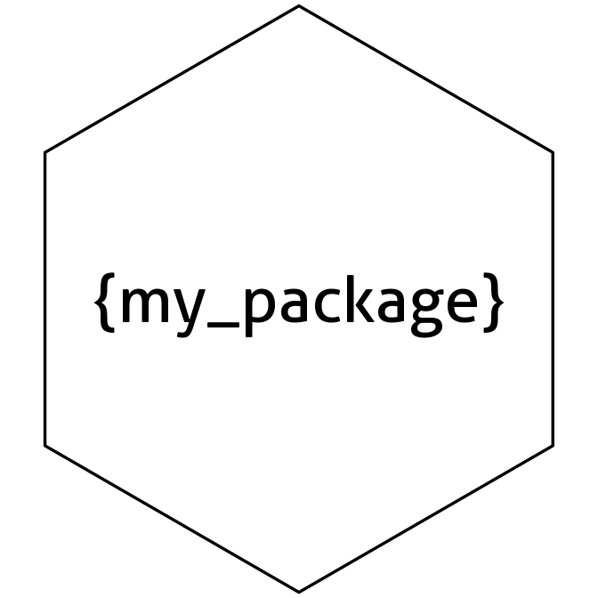

The oeli package offers a collection of handy functions that I found useful while developing R packages. Perhaps you’ll find them helpful too!
Demos
The package includes helpers for different tasks and objects. Below are some demos. Clicking the headings will take you to the corresponding vignette, where you’ll find a documentation on all the helpers currently available in that category.
data.frame helpers
The group_data_frame() function groups a given data.frame based on the values in a specified column:
df <- data.frame("label" = c("A", "B"), "number" = 1:10)
group_data_frame(df = df, by = "label")
#> $A
#> label number
#> 1 A 1
#> 3 A 3
#> 5 A 5
#> 7 A 7
#> 9 A 9
#>
#> $B
#> label number
#> 2 B 2
#> 4 B 4
#> 6 B 6
#> 8 B 8
#> 10 B 10
date helpers
The start of which year is closest to a specified date?
find_closest_year(as.Date("2022-07-15"))
#> [1] 2023
find_closest_year(as.Date("2022-05-15"))
#> [1] 2022
function helpers
Default arguments of a function can be retrieved via:
f <- function(a, b = 1, c = "", ...) { }
function_defaults(f)
#> $b
#> [1] 1
#>
#> $c
#> [1] ""
list helpers
The following merges two or more list objects by unique element names:
merge_lists(list("a" = 1, "b" = 2), list("b" = 3, "c" = 4, "d" = NULL))
#> $a
#> [1] 1
#>
#> $b
#> [1] 2
#>
#> $c
#> [1] 4
#>
#> $d
#> NULL
matrix helpers
We can check if a matrix is a proper transition probability matrix:
matrix <- diag(4)
matrix[1, 2] <- 1
check_transition_probability_matrix(matrix)
#> [1] "Must have row sums equal to 1"package helpers
A basic package logo can be quickly created:
package_logo("my_package", brackets = TRUE, use_logo = FALSE)
How to print a matrix without filling up the entire console?
x <- matrix(rnorm(10000), ncol = 100, nrow = 100)
print_matrix(x, rowdots = 4, coldots = 4, digits = 2, label = "what a big matrix")
#> what a big matrix : 100 x 100 matrix of doubles
#> [,1] [,2] [,3] ... [,100]
#> [1,] 0.16 0.28 0.97 ... -0.47
#> [2,] 1.08 1 0.99 ... 2.59
#> [3,] -0.06 1.14 -0.99 ... -0.02
#> ... ... ... ... ... ...
#> [100,] 1.37 1.4 -1.68 ... 1.06simulation helpers
The following simulates a Markov chain:
Gamma <- sample_transition_probability_matrix(dim = 3)
simulate_markov_chain(Gamma = Gamma, T = 20)
#> [1] 2 3 2 2 2 2 1 2 2 1 3 1 2 2 1 1 2 2 1 1
vector helpers
Create all possible permutations:
permutations(LETTERS[1:3])
#> [[1]]
#> [1] "A" "B" "C"
#>
#> [[2]]
#> [1] "A" "C" "B"
#>
#> [[3]]
#> [1] "B" "A" "C"
#>
#> [[4]]
#> [1] "B" "C" "A"
#>
#> [[5]]
#> [1] "C" "A" "B"
#>
#> [[6]]
#> [1] "C" "B" "A"